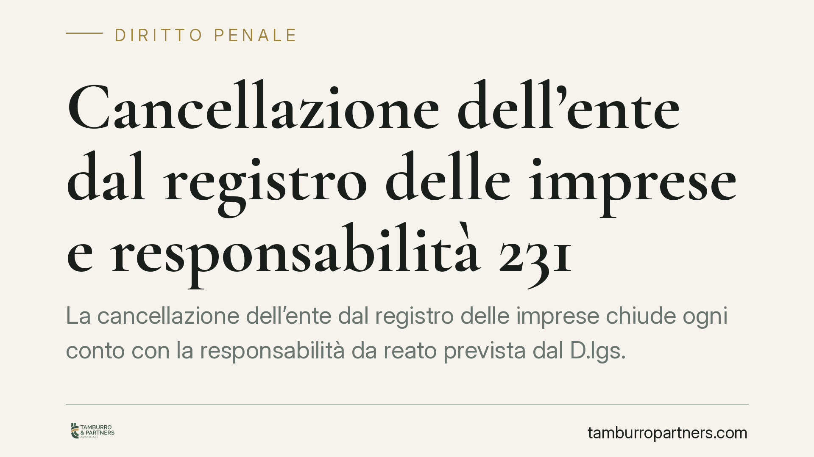

Cancellazione dell'ente dal registro delle imprese e responsabilità 231
La cancellazione dell'ente dal registro delle imprese chiude ogni conto con la responsabilità da reato prevista dal D.lgs. 231/2001? La questione è tutt'altro che teorica: tocca la sorte delle sanzioni pecuniarie e interdittive quando la società cessa di esistere. Il tema è oggetto di attenzione da parte della Cassazione penale ed espone gli enti a rischi non sempre percepiti.

Il tema e una premessa di metodo
Un'impresa viene cancellata dal registro delle imprese. Nel frattempo pende, o potrebbe sorgere, un procedimento a suo carico ai sensi del D.lgs. 231/2001 per un illecito amministrativo dipendente da reato. La cancellazione fa venire meno la responsabilità dell'ente, come accade per la persona fisica che muore?
Una premessa doverosa. Alla data di questo contributo non risulta consolidata né agevolmente verificabile una pronuncia della Cassazione penale che chiuda definitivamente la questione con un principio di diritto univoco. Trattiamo perciò il tema come orientamento in via di formazione, senza ancorare le conclusioni a un singolo arresto non confermato. Chi affronta un caso concreto deve verificare gli aggiornamenti giurisprudenziali più recenti.
Inquadramento normativo
La responsabilità dell'ente prevista dal D.lgs. 231/2001 è autonoma. Lo stabilisce l'art. 8, secondo cui l'ente risponde anche quando l'autore del reato non è identificato o non è imputabile, e persino quando il reato si estingue per causa diversa dall'amnistia. È una responsabilità che vive di vita propria, distinta da quella della persona fisica che ha materialmente commesso il reato.
Da qui la difficoltà dell'analogia con la morte del reo. L'art. 150 c.p. estingue il reato quando muore la persona fisica imputata. Applicarlo direttamente all'ente cancellato è tesi che l'orientamento prevalente tende a escludere: l'ente non è una persona fisica e la sua responsabilità non segue automaticamente le regole pensate per l'uomo. La cessazione giuridica della società non equivale meccanicamente alla morte del reo.
Rileva poi l'art. 27, che disciplina la responsabilità patrimoniale dell'ente per il pagamento della sanzione pecuniaria: dell'obbligazione risponde l'ente con il suo patrimonio. Il legislatore, inoltre, ha regolato espressamente le vicende modificative dell'ente agli artt. 28-33 (trasformazione, fusione, scissione, cessione d'azienda), prevedendo criteri di continuità della responsabilità a carico dei soggetti risultanti. È un dato sistematico significativo: la legge non consente che riorganizzazioni societarie cancellino la responsabilità da reato.
Implicazioni pratiche
Se la disciplina delle vicende modificative è ispirata alla continuità, diventa difficile sostenere che una semplice cancellazione dal registro produca l'effetto opposto, cioè l'estinzione della responsabilità. Il rischio, altrimenti, sarebbe evidente: usare la cancellazione come scorciatoia per sottrarsi alle sanzioni.
Occorre allora distinguere due situazioni.
La liquidazione fisiologica, condotta secondo le regole ordinarie e senza intenti elusivi, pone problemi di natura essenzialmente patrimoniale: chi risponde, e con quali beni, delle sanzioni pecuniarie eventualmente dovute.
La cancellazione preordinata all'elusione, cioè decisa per svuotare l'ente e sfuggire alle conseguenze del procedimento 231, è invece guardata con particolare rigore. In questi casi l'attenzione si sposta sui beni trasferiti, sui soci che hanno percepito il residuo attivo di liquidazione e sugli eventuali soggetti subentrati nell'attività d'impresa.
Per amministratori, soci e liquidatori il tema è concreto: la cancellazione non è necessariamente un punto finale, e le conseguenze possono ricadere su chi ha gestito la fase liquidatoria o beneficiato del patrimonio residuo.
Cosa fare in concreto
- Verifica la pendenza 231 prima di avviare la liquidazione. Accerta l'esistenza di procedimenti in corso o di indagini che coinvolgono l'ente, così da valutare i rischi della cancellazione.
- Documenta la genuinità della liquidazione. Conserva verbali, bilanci finali e criteri di riparto: dimostrare l'assenza di finalità elusive è decisivo.
- Mappa i trasferimenti patrimoniali. Traccia beni, aziende e somme distribuite ai soci, perché possono diventare oggetto di pretese o azioni.
- Valuta la posizione di liquidatori e soci rispetto al residuo attivo percepito, prima che la fase liquidatoria si chiuda.
- Aggiorna la verifica giurisprudenziale al momento della decisione: su questo tema gli orientamenti evolvono e una scelta va assunta sulla base dello stato dell'arte più recente.
Ogni decisione sulla sorte della società, in pendenza di rischi 231, va inquadrata in una valutazione complessiva delle sue implicazioni penali e patrimoniali.
---
Contributo informativo a cura di Tamburro & Partners - Avv. Giuseppe Tamburro. Non costituisce parere legale.
Ogni condominio ha una storia a sé.
Se gestisci un'amministrazione e vuoi un confronto su una specifica questione condominiale, scrivi allo studio. Ti rispondiamo entro un giorno lavorativo.